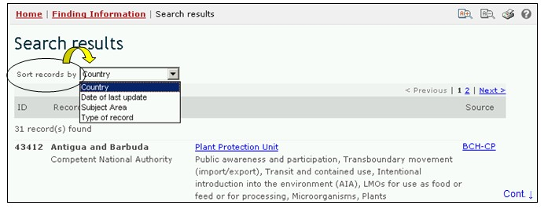

URL: http://bch.cbd.int/database/contacts/
Article 19 of the Protocol requires the designation of Competent National Authorities and National Focal Points. This information, as well as National Biosafety Websites and Databases, is searchable from the Search for National Contacts page.
A search interface for information about National Contacts can be accessed from the link in the Finding Information drop down menu on the navigation bar, or from the link in the left hand menu of the Finding Information page or from the link in the National Contacts text on the same page.

Figure 3
The National Contacts search interface enables the user to search for:
-
National Focal Points for the Cartagena Protocol on Biosafety (CPB-NFPs), who are responsible for liaising between the CBD Secretariat and their respective governments;
-
National Focal Points for the Biosafety Clearing-House (BCH-NFPs), who are responsible for liaising with the CBD Secretariat regarding the development and implementation of the BCH;
-
Emergency Measures Contact Points for receiving notifications under Article 17 of the Protocol;
-
Competent National Authorities, who are designated and authorized by governments to be responsible for performing the administrative functions required by Article 19 of the Protocol; and
-
National Biosafety Websites and Databases.

Figure 4

Figure 5
On the Search for National Contacts page there are five search criteria boxes provided for refining searches in this database. Each of them has a drop down menu from which it is possible to select the required criteria. The default setting for each drop down menu is the first item at the top of the menu list. On the right side of each box a button allows the user to activate multiple selections. Once in the multiple selection mode, it is possible to add more criteria to the selection by clicking on the relevant criteria while pressing the Ctrl (Control) key.
Box 1 [Select a country] lists all the country names in a drop down menu, so that users can select one or more specific countries for a search.

Figure 6
Box 2 [Select country group] lists country groups in a drop down menu so that users can select one or more specific groups of countries for a search. The country group list contains all major geographical or political groupings of countries and allows for narrowing the search to records submitted only by the members of the selected group or groups.

Figure 7
Box 3 [Type of National Contact] lists the types of National Contacts available in the database and allows the user to narrow the search to national contacts, or groups of national contacts, with specific responsibilities.

Figure 8
Box 4 [Date of record] allows the user to narrow the search according to the date records have been entered in the BCH. The drop down menu provides a number of options for limiting the search to only those records submitted within the selected timeframe (e.g. ‘last day’, ‘last month’, ‘last year’, etc.).

Figure 9
Box 5 [Keyword search] provides an opportunity for using keywords to narrow the search. The user can use standard keyword syntax (combination of AND/OR operators) to search with multiple words or core parts of words (e.g. “Import OR Export”). A search that is made by using keywords only produces results of records containing exactly the searched text and not possible synonyms that have not been inserted (i.e. a search with the single keyword “Maize” will produce a list of records containing the word “Maize” but not the words “Corn” or “Zea mays”).

Figure 10
The search page offers three buttons to produce a record list. The Search Now button (both at the top and bottom of the search interface) allows the user to activate a search based on the search criteria selected in the search facility boxes. The search results are sorted alphabetically, by default, according to country name. The Browse all records (at the bottom of the search interface) allows the user to obtain a list of all records in this database.

Figure 11
The Search Results pages have a sorting facility above the list of records. This can be used to sort the records according to criteria specific for that category of information. Note that the sorting criteria change when the user selects different search criteria.

Figure 12
Example 1: A user may wish to identify the emergency measures contact points in Paraguay for issues related to unintentional transboundary movements of LMOs or emergency measures. By selecting Paraguay from the Select a country drop down menu and ‘Emergency Measures (Article 17) Contact Point’ from the Type of National Contact drop down menu, the user narrows the search to the records most likely to provide the needed information.

Figure 13
When the Search Now button is clicked, a page of search results shows which National Contacts in Paraguay have some responsibility for emergency measures. Selecting the title of the institution allows the user to open the record that contains the details for that national contact.

Figure 14
Example 2: A user may wish to identify all of the BCH Focal Points in countries that are members of the Association of Southeast Asian Nations (ASEAN). The user selects Asia-Pacific - Association of Southeast Asian Nations in the Select Country Group box and Biosafety Clearing-House Focal Point in the Types of National Contacts box. Selecting the Search Now button displays a set of results showing the BCH Focal Points in the countries that are members of ASEAN.

Figure 15

Figure 16